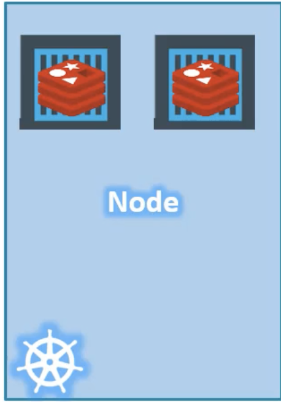
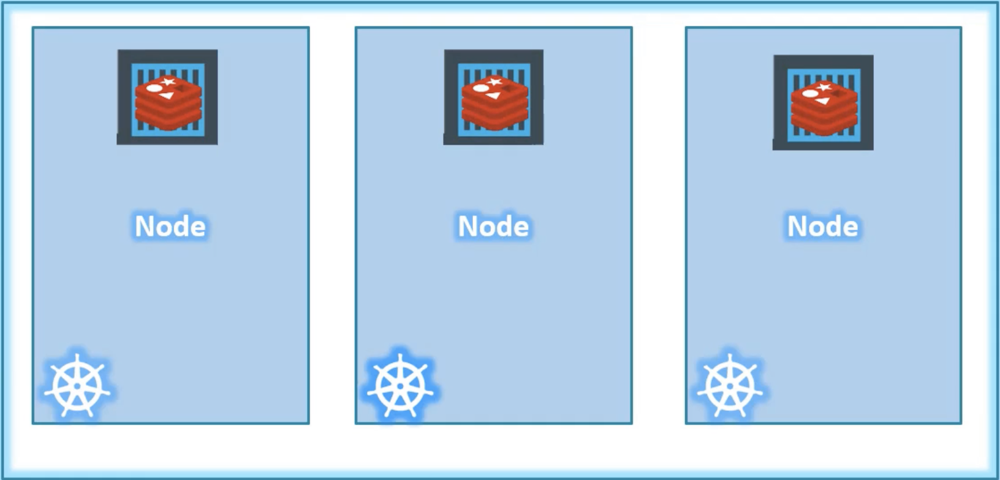
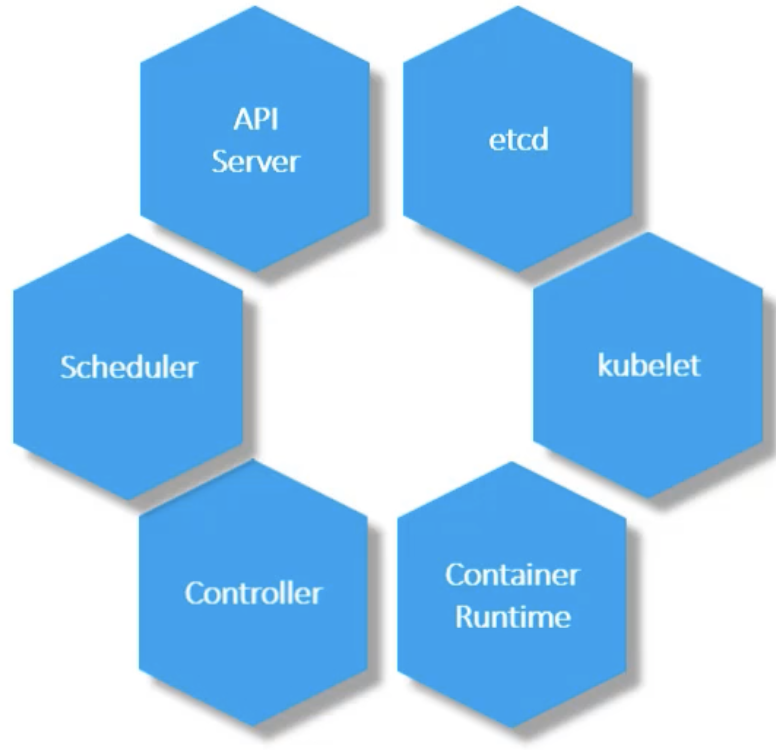
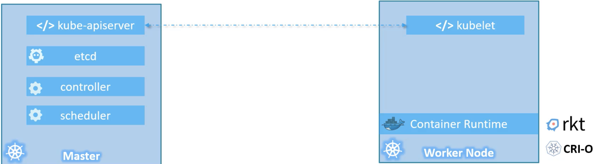

Architecture
Node
It is a physical or virtual machine where kubernetes installed. It is a worker machine and this is where containers are launched by kubernetes. It is also called as minions.

{kind=link}
In case if you have only one node in your infrastructure and for some reason, this node gets failed. This will lead to your application goes down. To avoid this, you need more than one node in your infrastructure.
Cluster
It is a set of nodes grouped together. In case if one node is failed for some reason, you still have other nodes to serve the request. Hence, your application never goes down. This will also help to share the load between the nodes.

{kind=link}
Now the challenges are
- Who can manage the cluster?
- Where the members of the cluster information store?
- How to monitor the nodes?
- If one node fails, how to change the workload to another node? Who will do this?
To answer all the above questions, Master is the one who will do all these activities.
Master
Master is also a node where kubernetes installed and configured as Master. This will watch all the nodes in the cluster and responsible for actual orchestration of containers on the worker nodes.
K8s Components
When you are installing the kubernetes, it is automatically installed the following components

{kind=link}
API Server
It acts as front-end for the kubernetes. The users, management devices, command line interfaces will talk to API servers to interact with kubernetes.
Etcd
It is distributed and reliable key-value store used by kubernetes to store all the data to manage the cluster. When you have multiple nodes, multiple masters in the cluster, all their information are stored in key-value format in a distributed manner. It is responsible for implementing the locks within the cluster to ensure that there are no conflicts between the masters.
Scheduler
It is responsible to distribute work or containers across the multiple nodes. It searches for the newly created containers and assign them to the nodes.
Controller
It is the brain behind the orchestration. They are the one to notice and respond if the containers, nodes goes down. Controller will take the decision to bring up the new containers/nodes/end points in such cases.
Container Runtime
This is the underlying software that is used to run the container. It could be docker, rkt, crio.
Kubelet
It is the agent that runs on each node in the cluster. It is responsible to ensure the containers are running as expected on the nodes.
How to serve as master or worker node
Worker node hosts the container. You need container runtime installed to run the containers. Kubelet agents are installed in worker node and responsible for interacting with master node. Kubelet will share the information with master node about health of worker node and also executed the instructions provided by master node.
Master node has API server. All the information shared by kubelet agent will be stored in key-value format in Etcd. Master also have controller and scheduler.

{kind=link}
kubectl
It is a command line utility and generally called kube command line tool or kube control. It is used to deploy and manage the application in kubernetes cluster.
The above command is used to deploy an application in k8s cluster. Example: The below command is used to view the cluster information. The below command is used to list all the nodes part of the cluster.